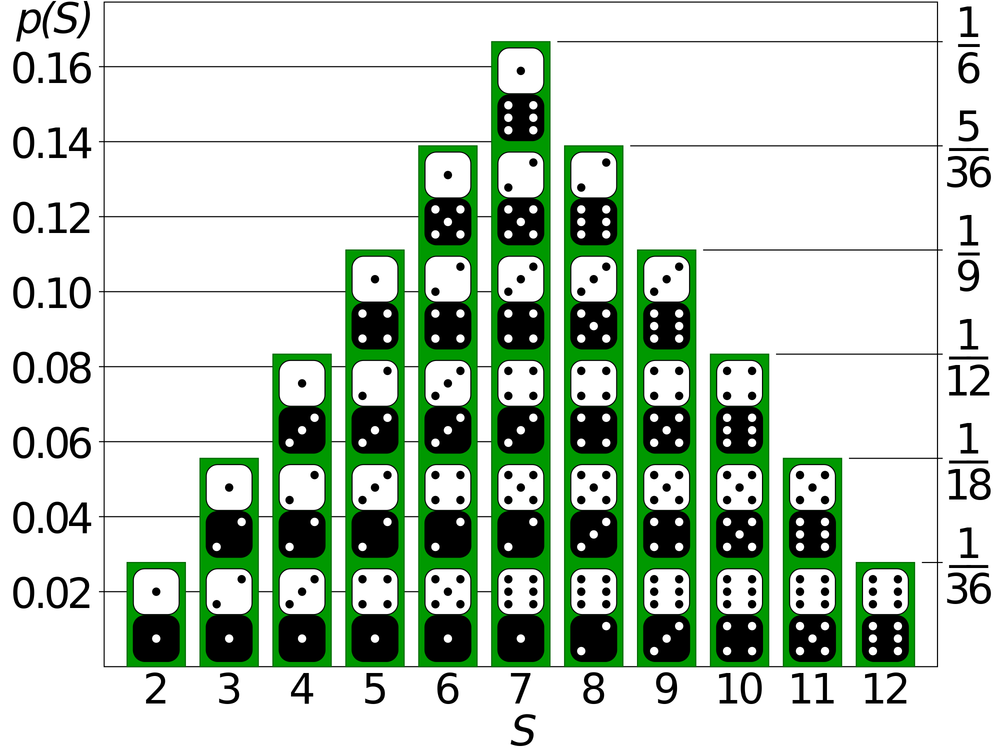

About
This web app simulates the rolling of two standard 6-faced die.
The way it does so however is "fair" in that within 36 rolls, you will see all 36 possible rolls that can be made.
For some board games, this makes the gameplay smoother and more fair.
For instance, in the game Settlers of Catan, players place settlements on
tiles which are represented by an item and a number. When the number on
that tile is rolled they receive that item. Because of this mechanic,
numbers 6 and 8 are most valuable (7 is not represented), while 2 and
12 are least valuable. However, the problem comes from the fact that the
outcome of the dice rolls are hardly exactly like the statistical
probability in real life. So, while setting up on an 8 or 6 in the game
means you should see those tiles get rolled 5 times each in 36 rolls,
you usually won't. This web application remedies that issue by still
making the order of the rolls random in order, but the distribution
exactly as it should be according to probability.
The way this site fixes the issue with standard dice is by creating a list
of every single possible roll, then shuffling that list and taking a "roll" out each time the button is clicked.
